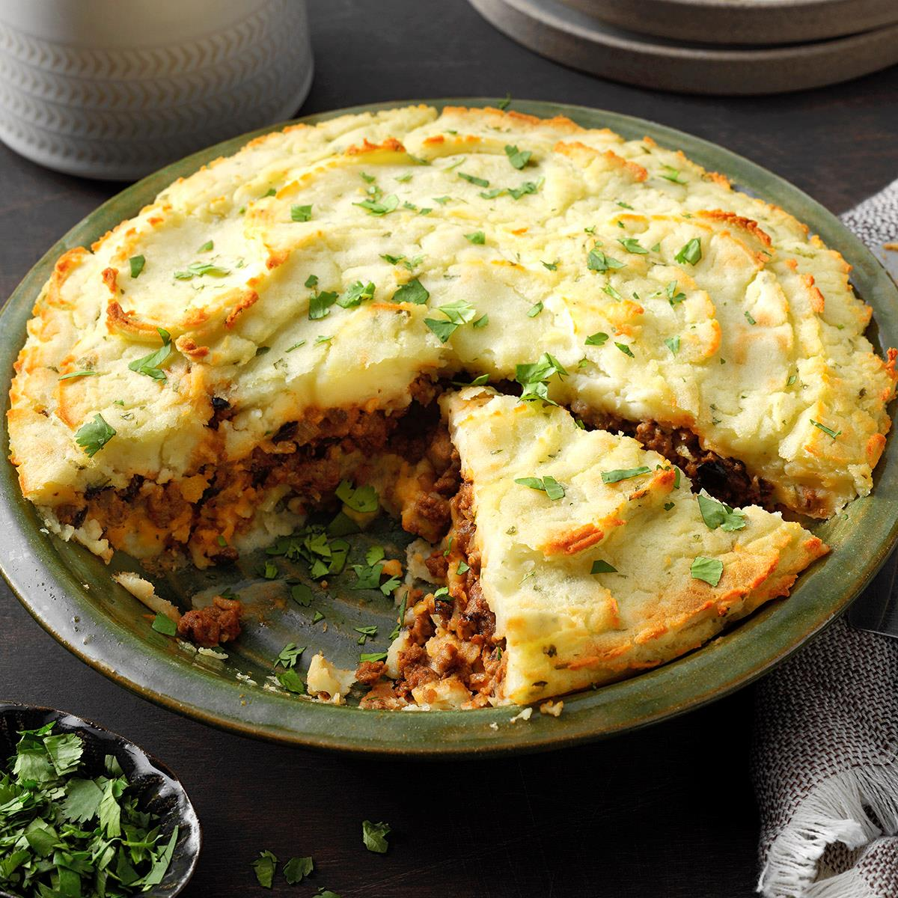

Recipe for a Shepherd's Pie

Description
This recipe will show you how to make a delicious and succulent Shepherd's Pie
Ingredients
Meat filling
- 2 table spoons extra virgin olive oil
- 1 cup chopped yellow onion
- 1 lb 90% lean ground beef
Potato toppin
- 1.5 - 2 lb russet potatoes
- 8 tablespoons unsalted butter
- 1/3 cup of half and half milk
Steps
- Make the meat filling
- Make the potato topping
- Assemble the casserole
Back to Home